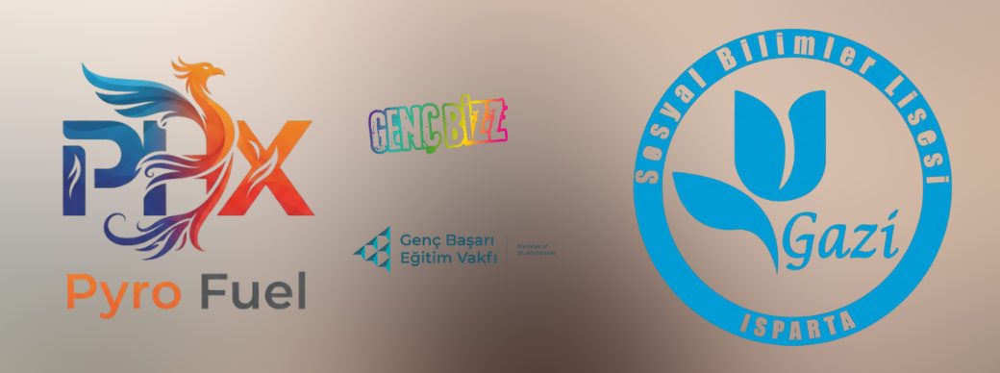

Şirket Üyeleri

Danışman Öğretmen
- Vahap Çetin
Genel Müdürlük
- Elif Müge Sarıpınar
Arge - Üretim
- Tunahan Aydemir
- Bahar Gül YILDIRIM
Satış ve Pazarlama
- Ceylin Güldemir
- Duru Güneş
İnsan Kaynakları
- Elif Neşe YILDIZ
Finans
- Gülsüm Berra Satır
- Gülçin İkbal Yürük
İletişim
- Büşra Doğan